Arduino workshop for beginners
Arduino Day 2014
Kenny Rasschaert, Inuits 
Arduino =
open hardware + open software

Hardware
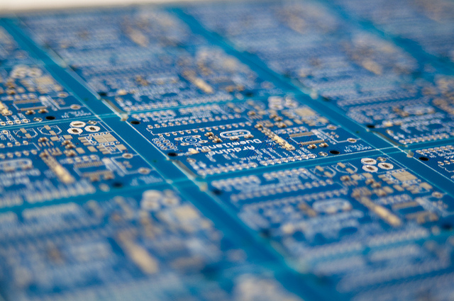
Photo: Tom Igoe 
A detailed view of an Arduino board
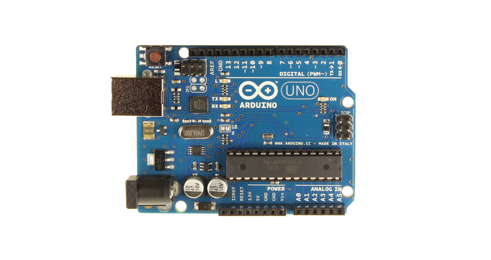
Photo: Arduino SA 
Some are bigger

Photo: Arduino SA
Some are smaller
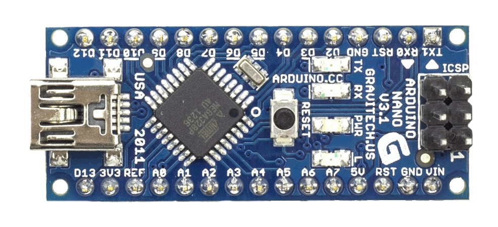
Photo: Arduino SA
Arduino + breadboard
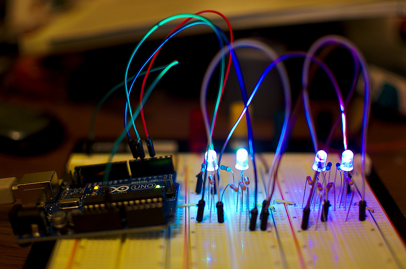
Photo: Flickr user Abuakel
Arduino + shields
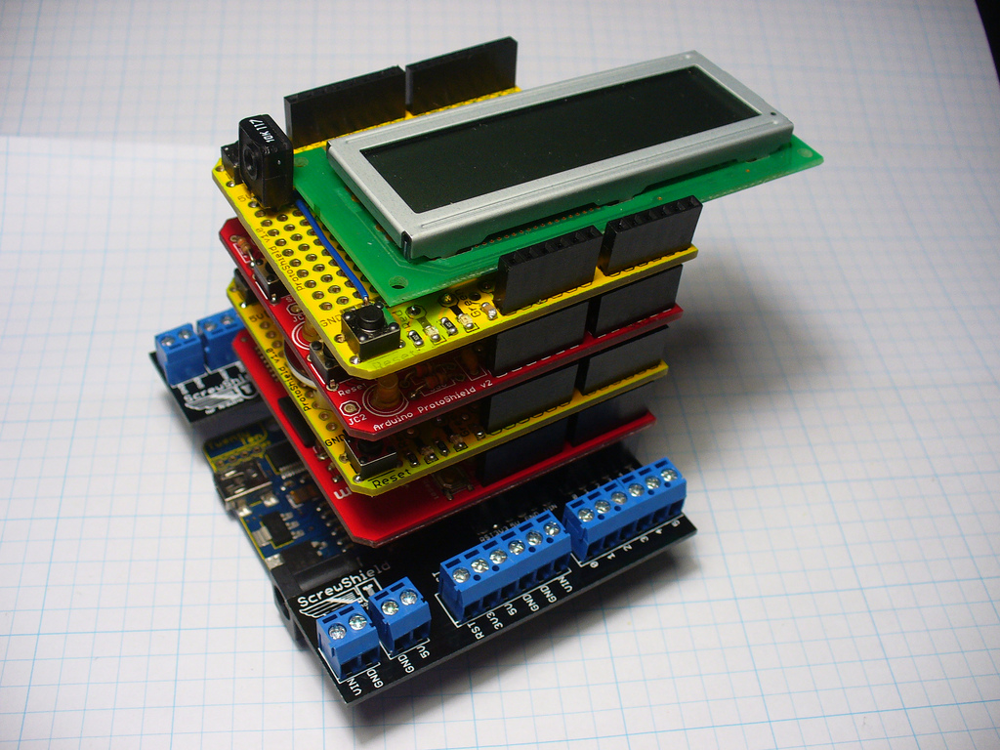
Photo: John Boxall
Software
Photo: W.Rebel, via Wikimedia Commons
Arduino IDE
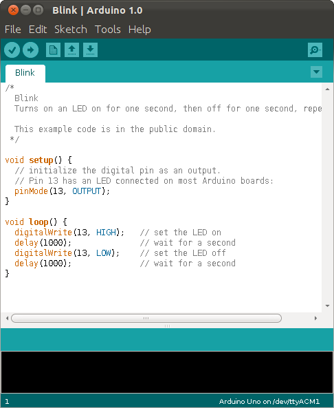
Screenshot: Wikipedia contributor Lemio
Command line - Ino
Digital output
LED
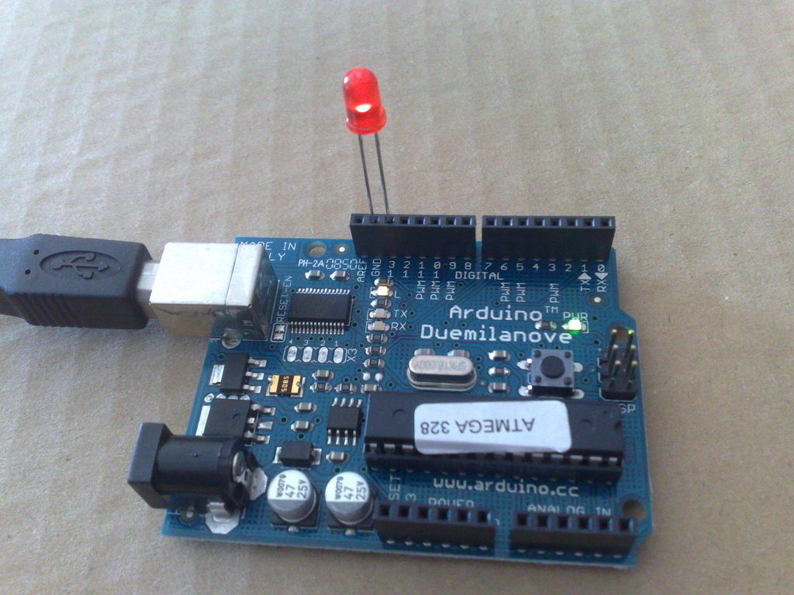
Photo: Flickr user Albir
Digital output
on a different LED
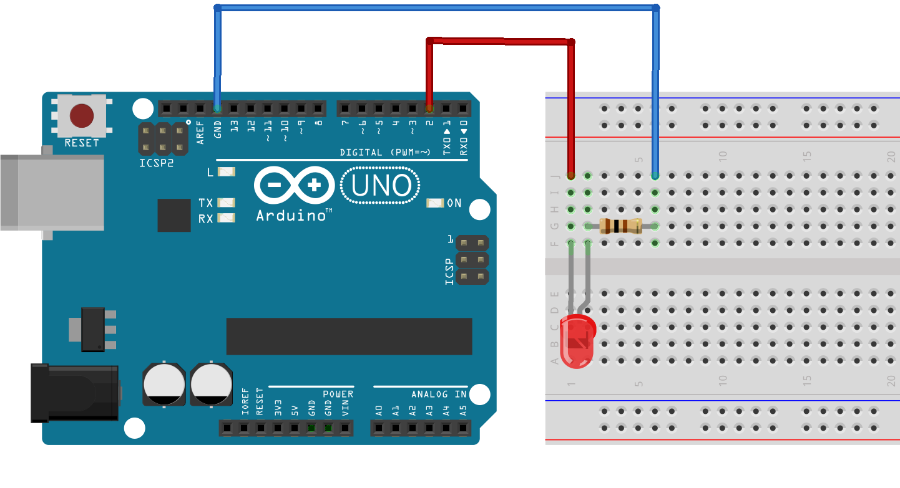
Image made with Fritzing
Ohm's law
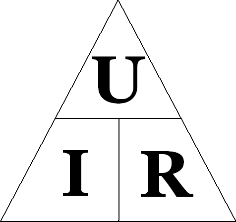
Color codes for resistors
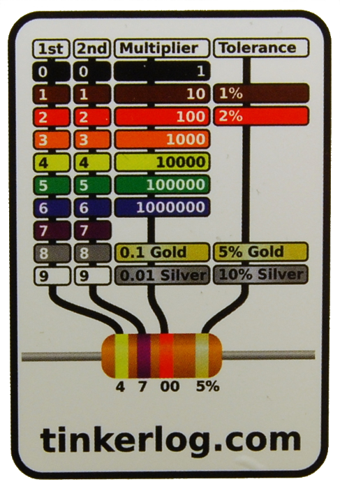
Photo: tinkerlog.com
Analog output
PWM

Image: Arduino SA
Analog input
Potentiometer

Photo: Roy Mohan Shearer 
Analog input
Potentiometer
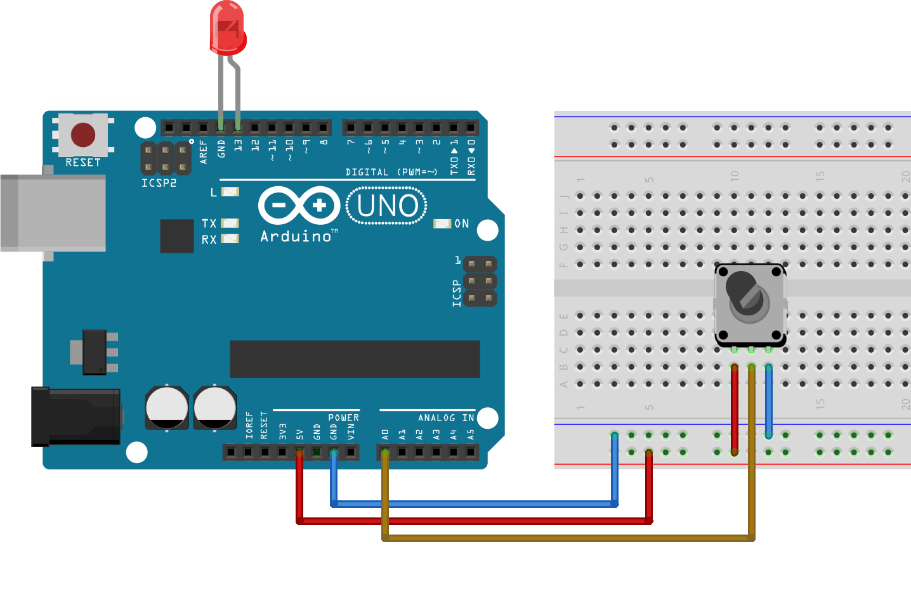
Image made with Fritzing
Digital input
Push button
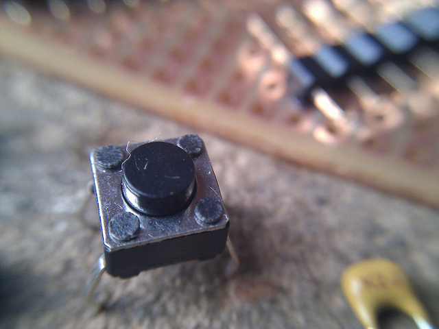
Photo: Flickr user Arduinolabs
Digital input
Push button
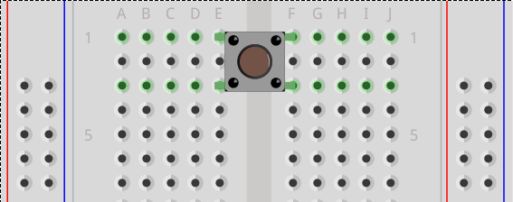
Image made with Fritzing
Digital input
Push button

Image made with Fritzing
Digital input
Push button
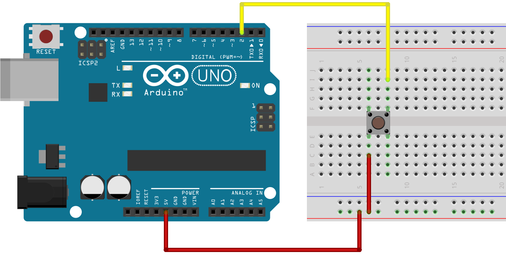
Image made with Fritzing
Digital input
"Floating" input
Photo: Horia Varlan 
Digital input
Push button with pull-down resistor
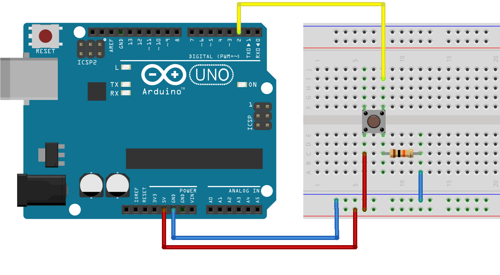
Image made with Fritzing
Digital input
Push button with pull-up resistor
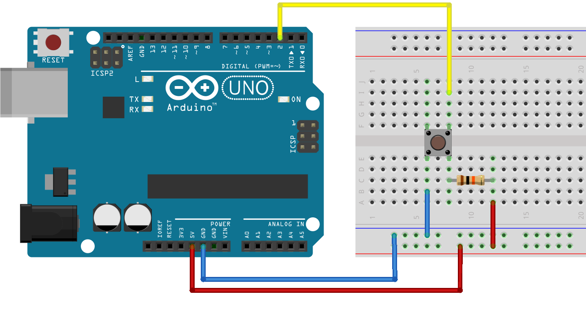
Image made with Fritzing
Digital input
Push button with the internal pull-up resistor
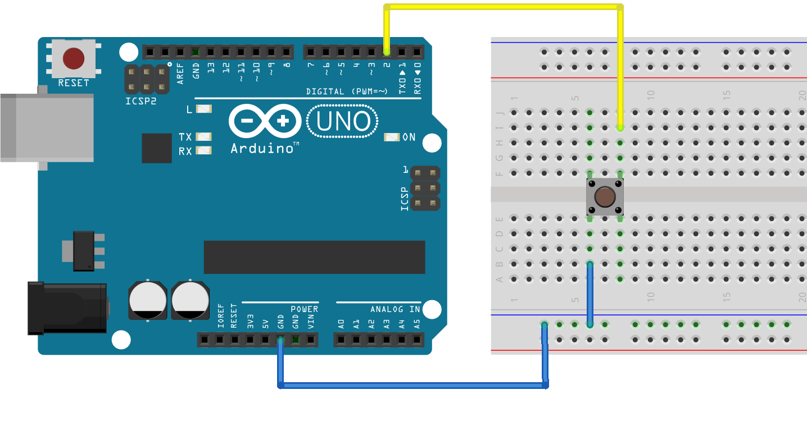
Image made with Fritzing
Digital input
Contact bounce

Image: "Super Rad!", via Wikimedia Commons